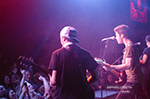
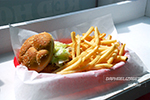
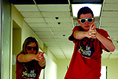
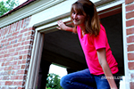
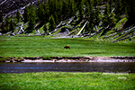
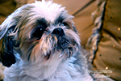

Paper Planes
November, 2016. I got the opportunity to join the band, Paper Planes as they played at Illinois State University's Battle of the Bands.
View GalleryWindy City Wieners
August, 2016. A sample of the work I've done for my internship at Windy City Wieners. I was photographed food for them. They use these photos for thier online menu as well as their social media handles.
View GalleryUniversity Program Board
September, 2016. This was a short "mini-shoot" taken as inspiration for the Haunted Laser Tag event graphics I designed at Illinois State University. UPB is like the campus student council -- creating and advertising campus events.
View GalleryRaider Portraits

October, 2014. I got the opportunity to photograph Raider for his second birthday. Since it was during fall, his mother and I went for a nostalgic/rustic feeling with the photos.
View GalleryAiesha Portraits
July, 2014. Aiesha and I worked together to create some stunning senior portraits for her. She plans to go to Bakers College to become a pastry chef!
View GalleryMakayla Portraits
July, 2013. Makayla is a photography enthusiast. We worked together to do a fun, spur of the moment portrait session.
View GalleryTravel Landscapes
2013 - Present. Traveling is a big passion of mine and I love documenting the beauty of nature around me. Here is a fun selection of my favorite pieces.
View GalleryPet Portraits
2012 - 2013. My family has a lot of pets. These furry friends are my "go-to" models when experimenting or playing around with photography.
View Gallery